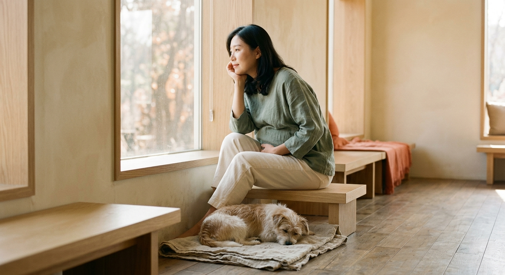
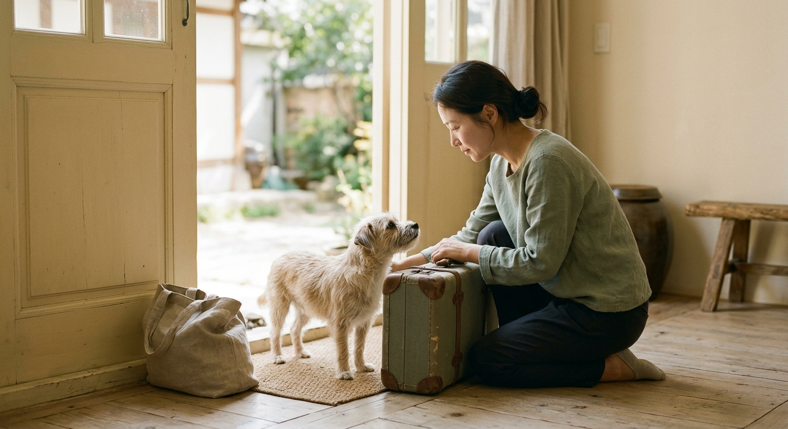
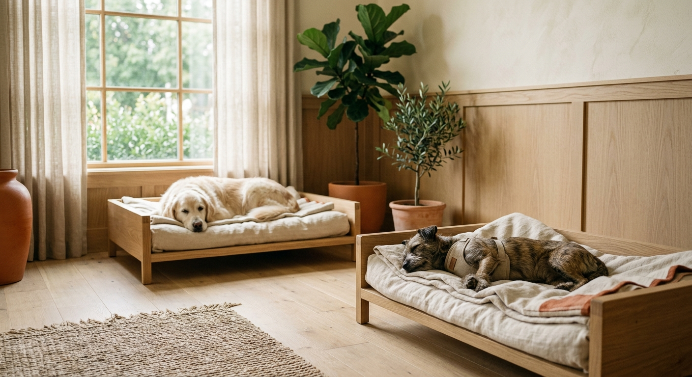
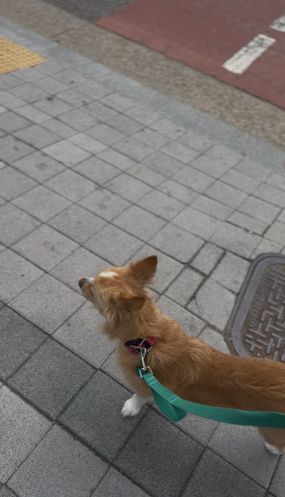

임신, 출산
출산 전후로돌보기 어렵거나아기와 함께 두기불안할 때
REHOMING
개인적인 사정으로 반려견과 더 이상 함께하기 어려운 상황일 때 체계적인 절차를 거쳐 아이를 입소시키고 무료 분양으로 보금자리를 이어 줍니다. 전화 상담(0505-707-0401)을 통해 현재 상황을 파악하며 무리한 수용 대신 여건에 맞춰 신중하게 돌봄을 시작합니다.
갑작스러운 환경 변화 속에서도 아이가 평온함을 잃지 않도록 세심하게 보살피며 다음 행보를 준비합니다. 이는 책임 있는 보호 속에서 아이에게 새로운 가족을 만날 기회를 열어 주는 과정입니다.
새로운 가족을 찾아 주는 일은아이에게 건넬 수 있는마지막 선물입니다.

출산 전후로돌보기 어렵거나아기와 함께 두기불안할 때

함께 살다동물 알러지가 나타나생활이 어려워졌을 때

해외로 데려갈 수 없거나이사한 집에서함께하기 어려울 때군 입대와 오랜 부재도같은 경우에 가깝습니다.

보호자가 아프거나연로해졌을 때아이도 나이가 들어집에서 돌보기 어려울 때
상담부터 입양 공고까지, 순서는 같습니다.

유선 상담을 통해 나이, 지역, 질병 유무와 특이 상황을 확인합니다. 센터 내부 공간을 종합적으로 살펴본 뒤 1차 입소 가능 여부를 결정합니다.

직접 센터로 방문하시거나 이동 지원 일정을 조율하여 선택합니다. 전국 어디든 전담 인력이 무상으로 픽업하여 이동을 돕습니다.

제반 확인 사항과 규정된 비용 조항을 면밀하게 검토합니다. 안내 내용을 충분히 숙지한 후 정식 입소 동의서를 작성합니다.

건강 상태와 함께 대형견, 소형견, 노령견 여부를 다각도로 살핍니다. 확인된 상태에 맞춰 아이가 안전하게 머물 전용 공간을 정합니다.

안정적인 생활 속에서 아이의 사진과 영상을 정성껏 촬영합니다. 새로운 인연을 맞이할 수 있도록 사전 자료를 차분히 정리합니다.

공식적인 입양 공고를 등록하여 아이의 다음 여정을 이끕니다. 적합한 보금자리를 찾아 새로운 가족과 따뜻하게 연결됩니다.
개별 일과와 성향 점검을 거쳐 생활 적응을 준비하고 있는 강아지 현황입니다.
양육 환경과 반려견의 성향이 부합하는지 점검하는 순서입니다.
주거 형태, 가족 구성원의 동의 여부, 돌봄 시간 등을 유선 상담을 통해 점검합니다.
보호소에 방문하여 개체의 건강 이력과 행동 특성을 확인하고 직접 대면 시간을 가집니다.
지속 양육에 관한 세부 항목을 확인하고 확인 서류를 작성한 뒤 가정을 이룹니다.
산책하고, 밥 먹고, 미용하는 보호소의 하루입니다. 사진을 누르면 그 이야기를 볼 수 있어요.





의정부에서 많이 찾는 상담 단어를 모았습니다. 글을 누르면 그 안내로 이동합니다.
CONTACT
입양과 입소, 전국 어디서든 전화로 상담합니다.
전국 입소문의